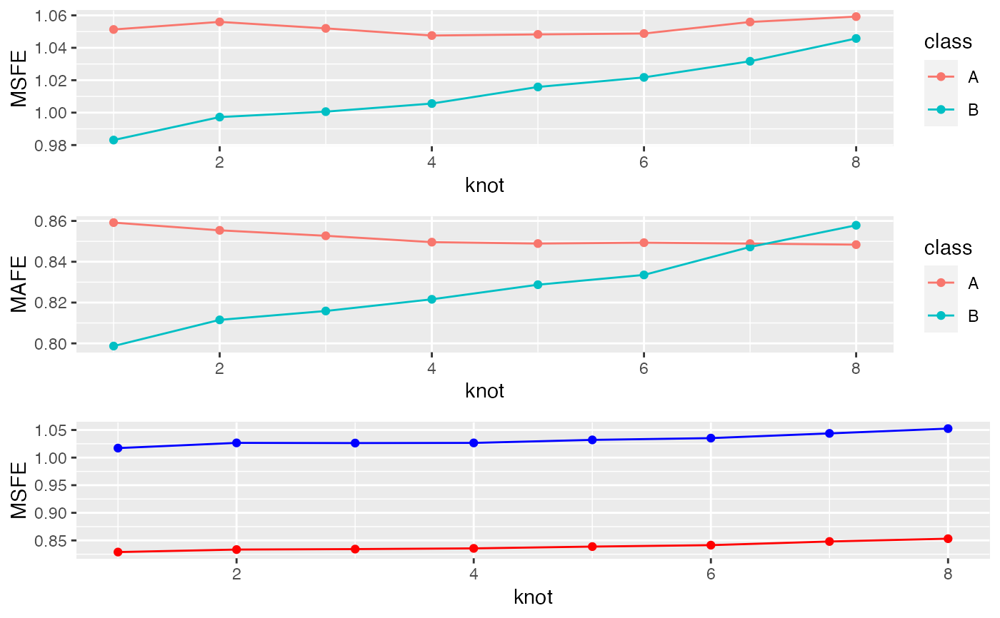

mc_cv.RdNew function to compute optimal value of regularization parameter based on K-fold cross-validation
mc_cv( fit, Kfold = 5, nweight = NULL, weighting = TRUE, wtype = "size", type = "MSFE", l1length = 100, normalize = TRUE )
| fit | fitted object returned from mc_reg() |
|---|---|
| Kfold | K-fold cross-validation |
| nweight | vector of length K indicating weights for MSFE measure |
| type | MSFE or MAFE |
| l1length | length sparsity grid l1 penalty |
| asym | flag: asymmetric forecast error measure or not |
A list with the following components
Selected value of the regularization parameter via BIC
Estimated coefficients selected via BIC
p <- 7 k <- 2 n <- 500 beta <- c(1, 2) set.seed(1) X <- list(matrix(rnorm(p * n), ncol = p), matrix(rnorm(p * n), ncol = p)) Y <- list(rnorm(n), rnorm(n)) df = lists_to_data(Y, X) res = mc_reg(df) cv_res <- mc_cv(res) p = 7 k = 2 n = 100 beta = c(1,2) set.seed(2) X = list(matrix(rnorm(p*n), ncol = p), matrix(rnorm(p*n), ncol = p)) Y = list(rnorm(n), rnorm(n)) df = lists_to_data(Y, X) Xk <- mvtnorm::rmvnorm(n*2, mean=1:p, sigma=diag(1:p)) %>% round(2) yk <- Xk %*% c(0,0,4,0,0,8,0) + rnorm(n*2) + rep(c(0,100), each = n) %>% round(2) df = data.frame(y = yk, Xk, class = rep(c("A", "B"), each = n)) res = mc_reg(df) cv_res <- mc_cv(res) # different cv runs have different lamda values # is this a problem? cv_res$cv_fits[[1]]$lambda#> [1] 19.694 12.076 10.709 9.977 3.505 3.158 1.507 0.000cv_res$cv_fits[[2]]$lambda#> [1] 13.189 7.484 6.865 6.174 3.953 3.119 2.157 0.000# should fix the lambda grid across all lambda runs # with fixed lambda values, we need to force that # using either the full original data # Note this is "fixed" because we don't use the # default lambda grid when extracting coefficients p1 = cv_res$class_knot_summary %>% ggplot2::ggplot(ggplot2::aes(x = knot, colour = class)) + ggplot2::geom_point(ggplot2::aes(y = MSFE)) + ggplot2::geom_line(ggplot2::aes(y = MSFE)) p2 = cv_res$class_knot_summary %>% ggplot2::ggplot(ggplot2::aes(x = knot, colour = class)) + ggplot2::geom_point(ggplot2::aes(y = MAFE)) + ggplot2::geom_line(ggplot2::aes(y = MAFE)) p3 = cv_res$knot_summary %>% ggplot2::ggplot(ggplot2::aes(x = knot, group = "")) + ggplot2::geom_point(ggplot2::aes(y = MSFE), colour = "blue") + ggplot2::geom_point(ggplot2::aes(y = MAFE), colour = "red") + ggplot2::geom_line(ggplot2::aes(y = MSFE), colour = "blue") + ggplot2::geom_line(ggplot2::aes(y = MAFE), colour = "red") gridExtra::grid.arrange(p1, p2, p3)